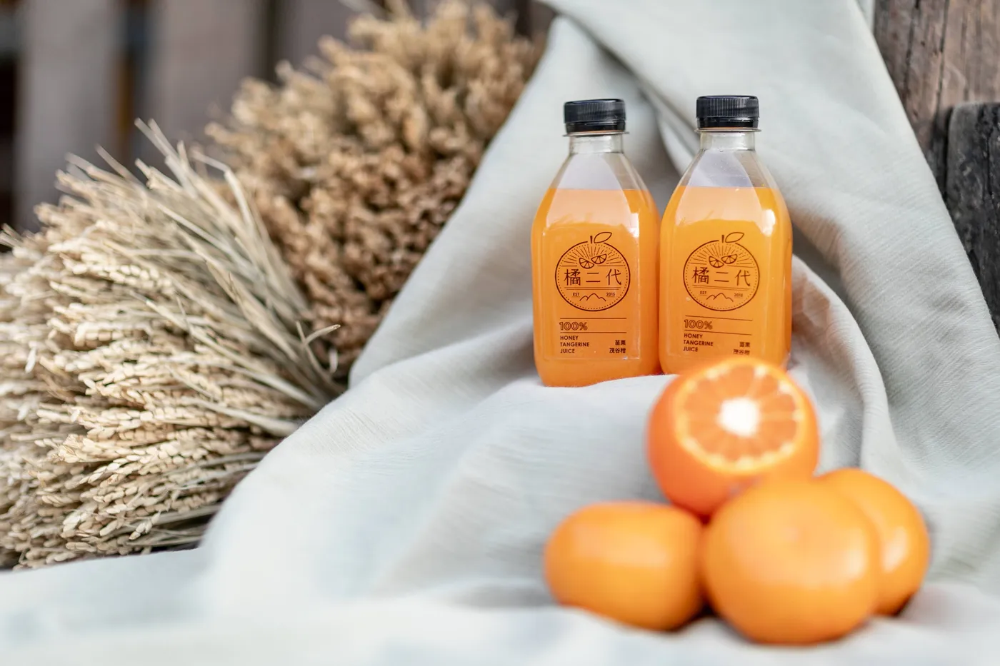

01 · 客家餐桌
01 · 客家餐桌一鍋熱湯，
一桌人情。
↗福菜的香、客家鹹湯圓的滋味，
把熟悉的家常，端上相聚的餐桌。
 來坐坐
來坐坐從熱呼呼的銅鍋，到清爽的一口甜。
讓這片土地，招待你的胃。
照片為餐點與甜點實拍；當日品項、份量與價格請來電詢問。
愛於地，善於民，友於物，執於勤。
這是橘二代的心意。從返鄉、認識土地，到與農人一起珍惜每一份收成；讓外表不完美的水果，依然能被好好品嚐。
伍貳居所延續這份惜物精神。留下老屋的紋理，也用一桌客家料理，連起人、土地與生活。
看看我們的日常 ↗
 從產地到餐桌
從產地到餐桌 吃一口
吃一口從在地水果出發，讓冰淇淋說說土地的故事。每一次來，都可以問問今天有什麼風味。
珍惜水果格外品，讓農人的收成有更多可能。對食物多一點用心，讓好味道少一點浪費。
口味與餐廳供應依當日為準。